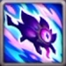
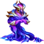

Guía del Titán Valdur: Habilidades, Skins y Equipos Hero Wars Alliance
- Por: Alexandre Domingos. .
¿Y si mover a un enemigo fuera tan importante como golpearlo? Valdur, la Voz de Elarite, convierte el desplazamiento en el campo de batalla en una oportunidad para sus aliados. En mi opinión, su verdadero atractivo reside en conectar un equipo Elarite, en lugar de depender únicamente de los pequeños golpes de su invocación.
En esta guía explico cómo el número de Elarites vivos cambia una batalla, por qué el Ataque Físico merece atención y dónde gastaría los recursos primero. Si estás desarrollando a Metida, Orm, Alecto y Pallant, Valdur aporta una estrategia de equipo clara a esa inversión.

Empieza por distinguir entre daño directo y valor para el equipo: Hijo de Elarite empuja y atrae a los enemigos, mientras que Resonancia de Elarite recompensa una formación con más Elarites vivos. Por lo tanto, perder a un aliado puede cambiar algo más que el daño que causas.
Las prioridades siguientes son mi evaluación de sus mecánicas descritas. Las puntuaciones sirven como orientación para desarrollar al Titán, no como una clasificación basada en porcentajes de victoria medidos.

📋 Índice de Valdur
¿Quién es Valdur en Hero Wars Alliance?
Valdur es la Voz de Elarite, un Invocador de la retaguardia que interrumpe habilidades enemigas y cambia repetidamente la posición de los adversarios. Completa la formación Elarite de cinco integrantes junto con Metida, Orm, Alecto y Pallant.

- Función: Invocador
- Elemento: Elarite
- Posición: Retaguardia
- Atributo principal: Ataque Físico
Atributos Indicados de Valdur
- Salud: 14,936,503
- Ataque Físico: 528,271
- Defensa Adicional contra Titanes de Luz y Oscuridad: 120,600
- Daño Adicional contra Titanes de Luz y Oscuridad: 213,000
Estos son los valores de desarrollo proporcionados, utilizados como referencia para los ejemplos de habilidades siguientes.
Ventajas y Desventajas de Valdur - Hero Wars Alliance
✅ Ventajas
- Empuja y atrae a los enemigos con una sola invocación.
- Interrumpe secuencias de habilidades enemigas.
- El Ataque Físico aumenta varias bonificaciones del equipo.
- Habilita daño por movimiento en un equipo Elarite completo.
- Su invocación no puede ser atacada.
❌ Desventajas
- Depende mucho de aliados Elarite vivos.
- El daño por movimiento requiere cambios reales de posición.
- Cada golpe de la invocación escala con solo el 10% del Ataque Físico.
- La invocación permanece solo cuatro segundos.
- Las bonificaciones de la Corona solo se aplican contra enemigos de Luz y Oscuridad.
Guía de Habilidades de Valdur - Hero Wars Alliance
Aprende cómo la invocación de Valdur mueve a los enemigos, cómo Resonancia de Elarite cuenta a los aliados vivos y por qué el Ataque Físico refuerza su daño y las bonificaciones del equipo.

Hijo de Elarite
Descripción en el juego: Invoca a Hijo de Elarite en el centro del equipo enemigo. No puede moverse. Al aparecer, empuja a los enemigos y les causa daño. Tras 4,0 segundos, Hijo de Elarite desaparece, atrae a los enemigos hacia sí y les causa daño. Hijo de Elarite es un Titán Elarite y no puede ser atacado.

Explicación de la Habilidad: Piensa en la invocación como un ancla temporal en la formación enemiga. Aparece en el centro, aleja a los enemigos y causa daño. Cuatro segundos después, desaparece, atrae a los enemigos de vuelta hacia su posición y vuelve a causar daño. No puede moverse ni ser atacada.
Fórmula por golpe: (10% × Ataque Físico). Con el valor indicado de 528,271 de Ataque Físico, el daño mostrado es de 52,827 al aparecer y 52,827 al desaparecer.
Importancia en PvP: El desplazamiento puede interrumpir la ejecución de las habilidades enemigas y crea oportunidades para el efecto de movimiento con cinco Elarites. La propia invocación es un Titán Elarite, lo que cuenta para el número de Elarites vivos mientras está presente.
Resonancia de Elarite
Descripción en el juego: Pasiva. Potencia a los Titanes Elarite aliados. Las bonificaciones se acumulan y dependen del número de Titanes Elarite vivos. Con 2, otorga daño adicional contra Titanes de Agua, Tierra y Fuego. Con 3, otorga defensa adicional contra Titanes de Agua, Tierra y Fuego. Con 4, Valdur recibe 400 de Energía al usar habilidades. Con 5, cuando un Titán Elarite aliado causa daño a un enemigo, el objetivo sufre un efecto durante 4 segundos y recibe daño cada 0,5 segundos si ha cambiado de posición durante ese intervalo. Con 6, reduce el daño recibido en un 50%.

Explicación de la Habilidad: Cuenta a los Titanes Elarite aliados vivos. Cada umbral añade una bonificación y conserva las anteriores. Un aliado derrotado puede reducir ese número, por lo que mantener viva a la formación forma parte del plan ofensivo de Valdur.
- 2 Elarites vivos: Daño adicional contra Titanes de Agua, Tierra y Fuego. Fórmula: (25% × Ataque Físico), mostrado como 132,068 con los atributos indicados.
- 3 Elarites vivos: Defensa adicional contra Titanes de Agua, Tierra y Fuego. Fórmula: (25% × Ataque Físico), mostrado como 132,068.
- 4 Elarites vivos: Valdur recibe 400 de Energía al usar habilidades.
- 5 Elarites vivos: El daño de un Elarite aliado aplica un efecto de 4 segundos al enemigo. Cada 0,5 segundos, comprueba si ese objetivo cambió de posición durante el intervalo. Solo un intervalo que cumpla esa condición causa daño por movimiento.
- 6 Elarites vivos: El daño recibido se reduce en un 50%.
Daño por movimiento en cada intervalo que cumpla la condición: (0,5% × Ataque Físico), mostrado como 2,641 con los atributos indicados. La fórmula escala con el Ataque Físico; los datos proporcionados no identifican el tipo de daño.
¿Cómo llegas a seis? Los cinco integrantes Elarite del equipo más Hijo de Elarite vivo pueden sumar seis durante los cuatro segundos de duración de la invocación. Esto depende de que los cinco integrantes del equipo sigan vivos; no es una reducción permanente del daño.
Importancia en PvP: Pallant, Metida y Valdur mueven a los enemigos, favoreciendo el efecto de cinco integrantes. Un objetivo inmóvil no recibe el daño de ese efecto simplemente porque la penalización esté activa.
Mejor Skin para el Titán Valdur - Hero Wars Alliance
Elige el orden de skins de Valdur equilibrando el escalado por Ataque Físico y la Salud, para que tu apoyo Elarite sobreviva lo suficiente como para mantener sus bonificaciones activas.

Skin Predeterminada
Ataque Físico: +196,800
Prioridad de Evolución para PvP: Muy Alta — 1.ª — Mejora ambos golpes de la invocación, las bonificaciones de daño y defensa y el daño por movimiento.
Prioridad de Evolución para la Mazmorra: Muy Alta — 1.ª — Refuerza los mismos efectos de escalado cuando la formación que tienes disponible puede activarlos.

Skin Primordial+
Salud: +5,255,950
Prioridad de Evolución para PvP: Alta — 2.ª — Aumenta la supervivencia sin mejorar directamente sus fórmulas de Ataque Físico. Adelanta esta skin si Valdur muere antes de usar su invocación.
Prioridad de Evolución para la Mazmorra: Alta — 2.ª — Una inversión en supervivencia cuando el desgaste le impide mantener el número de Elarites del equipo. Dale prioridad si la supervivencia es tu principal limitación.
El total indicado corresponde a la Skin Primordial+; no lo sumes de nuevo como una bonificación independiente de la skin básica.
Prioridad de Evolución de Artefactos de Valdur - Hero Wars Alliance
Compara los artefactos de Valdur por sus bonificaciones de equipo, su escalado personal y sus limitaciones según el enfrentamiento; después invierte en los atributos que ayuden más a menudo a tu formación Elarite.
Mi orden general es Sello, Arma y después Corona. La presentación siguiente mantiene Arma, Corona y Sello en su orden original; cada indicación de prioridad muestra el orden de inversión.

Llamada de Zorval (Artefacto de Arma)
Ataque Físico: +120,000
Llamada de Zorval proporciona una bonificación de Ataque Físico al equipo con una probabilidad de activación indicada del 100%. Esto complementa el escalado por Ataque Físico de Valdur. Los valores proporcionados no especifican la duración de la bonificación.
Prioridad de Evolución para PvP: Alta — 2.ª — El apoyo al ataque del equipo es valioso cuando Valdur ya sobrevive de forma fiable para usar sus habilidades.
Prioridad de Evolución para la Mazmorra: Alta — 2.ª — Ayuda a la ofensiva del equipo, mientras que el Sello proporciona primero supervivencia personal y escalado permanentes.

Corona de Elarite (Artefacto de Corona)
Daño Adicional contra Titanes de Luz y Oscuridad: +213,000
Defensa Adicional contra Titanes de Luz y Oscuridad: +120,600
Estos atributos adicionales de daño y defensa se aplican contra Titanes de Luz y Oscuridad. No ofrecen la misma protección contra adversarios de Agua, Tierra, Fuego o Elarite.
Prioridad de Evolución para PvP: Media — 3.ª — Aumenta su prioridad si te enfrentas con frecuencia a Luz y Oscuridad; su valor depende del elemento enemigo.
Prioridad de Evolución para la Mazmorra: Media — 3.ª — La defensa adicional puede ayudar a sobrevivir contra enemigos de Luz y Oscuridad, pero comprueba los adversarios de la sala antes de invertir. La necesidad de sobrevivir en la Mazmorra, por sí sola, no hace que esta Corona sea universal.

Sello de Invocación Ctónico (Artefacto de Sello)
Ataque Físico: +97,500
Salud: +3,975,000
Prioridad de Evolución para PvP: Muy Alta — 1.ª — Combina escalado permanente por Ataque Físico con Salud, favoreciendo sus habilidades y su supervivencia en cualquier enfrentamiento.
Prioridad de Evolución para la Mazmorra: Muy Alta — 1.ª — La Salud le ayuda a mantenerse vivo, mientras que el Ataque Físico mejora su invocación y las bonificaciones aplicables de Resonancia.
Estos son los valores del Sello de Invocación Ctónico, no los de un Sello de Invocación estándar.
Cómo Contrarrestar al Titán Valdur en Hero Wars Alliance
La estrategia más clara para contrarrestarlo aprovecha su dependencia de aliados vivos y del movimiento enemigo. Estas son estrategias deducidas de sus habilidades, no una lista probada de Titanes específicos que lo contrarresten.
- Reduce el número de Elarites: Derrotar a un integrante de una formación de cinco Elarites reduce su número natural por debajo del umbral de daño por movimiento. La invocación puede volver a aumentar ese número temporalmente, así que presta atención al momento en que aparece.
- Limita el movimiento cuando sea posible: El efecto de cinco Elarites requiere un cambio de posición en cada intervalo comprobado. Estar marcado, por sí solo, no basta.
- Presiona fuera del período de la invocación: Con cinco integrantes Elarite vivos en el equipo, la bonificación defensiva del umbral de seis depende de que Hijo de Elarite esté presente.
- Interpreta correctamente las bonificaciones elementales: Los enemigos de Luz y Oscuridad se enfrentan a las bonificaciones de la Corona; los enemigos de Agua, Tierra y Fuego se enfrentan a las bonificaciones de Resonancia de los umbrales de dos y tres. Ningún enfrentamiento elemental garantiza automáticamente una ventaja capaz de contrarrestarlo.
Compararía combates con y sin la primera baja Elarite antes de evaluar un equipo para contrarrestarlo. La posición de Valdur en la retaguardia también significa que alcanzarlo depende de las herramientas reales de selección de objetivos del equipo atacante.
Mejor Equipo para el Titán Valdur - Hero Wars Alliance
 Orm |
Estrategia de Composición del Equipo
Valdur, Metida, Orm, Alecto y Pallant aportan cinco integrantes Elarite al equipo. Pallant, Metida y Valdur mueven a los enemigos, habilitando el daño por movimiento de Resonancia después de que un Elarite aliado dañe a un objetivo. Orm y Alecto completan el número de cinco integrantes.
Con los cinco vivos, Hijo de Elarite puede aportar temporalmente la sexta unidad del recuento y la reducción del daño recibido. Mi prioridad es mantener viva a la formación completa el tiempo suficiente para que esos períodos de control y defensa marquen la diferencia.
Debilidades y Consideraciones del Equipo
Débil contra: Las estrategias que eliminan pronto a un aliado Elarite o impiden desplazamientos constantes pueden perjudicar la sinergia principal de la formación. Esto describe una debilidad de sus mecánicas, no un enfrentamiento con derrota comprobada.
Consideraciones estratégicas: Las bonificaciones dependen de Titanes vivos, y el efecto de movimiento comprueba los cambios de posición cada medio segundo. No des por hecho que cada marca causa daño en todos los intervalos. Prueba el desarrollo real de tu equipo antes de aumentar la inversión.
⭐ Valdur: Veredicto Final de Alexandre
Mi recomendación es desarrollar a Valdur cuando estés comprometido con la formación Elarite completa. El daño directo de su invocación es solo parte de su valor: el desplazamiento, las bonificaciones acumulables y el recuento temporal del sexto Elarite dan al equipo un plan de batalla coherente.
Empezaría por la Skin Predeterminada y el Sello de Invocación Ctónico, y después desarrollaría Llamada de Zorval. Adelanta la Skin Primordial+ si muere demasiado pronto y aumenta la prioridad de la Corona de Elarite cuando los enfrentamientos contra Luz y Oscuridad lo justifiquen. Invierte en el problema al que realmente se enfrenta tu equipo, sin perder de vista la sinergia de los cinco integrantes.
¡Explora nuevas habilidades con nuestras guías destacadas!


¡Deja Tu Opinión!
¿Te ha gustado nuestra guía del Titán Valdur? ¿Hay algo que no hayas entendido o para lo que te gustaría sugerir cambios? Te invitamos a participar en nuestra sección de comentarios en la página del Blog Alexandre Games. No dudes en expresar tu opinión, aclarar tus dudas y compartir tus sugerencias.
Haz clic en el botón de abajo para empezar: